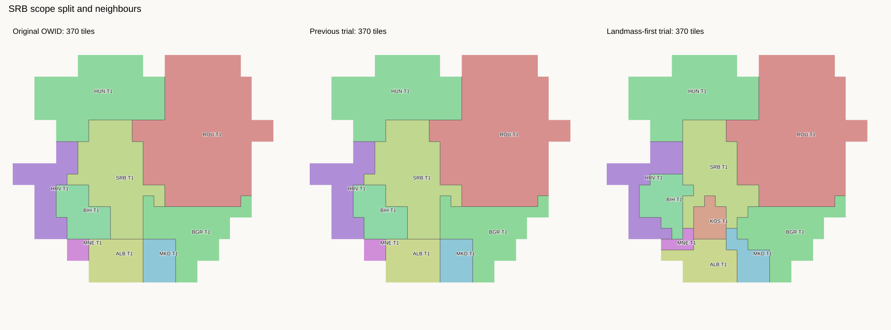
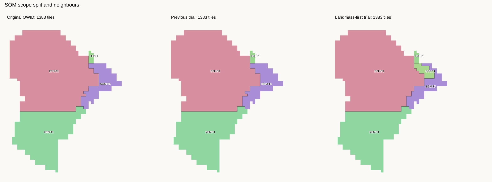
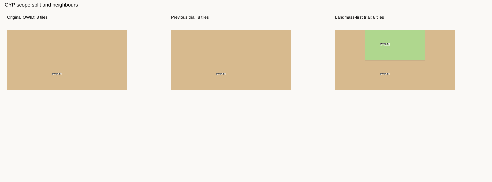
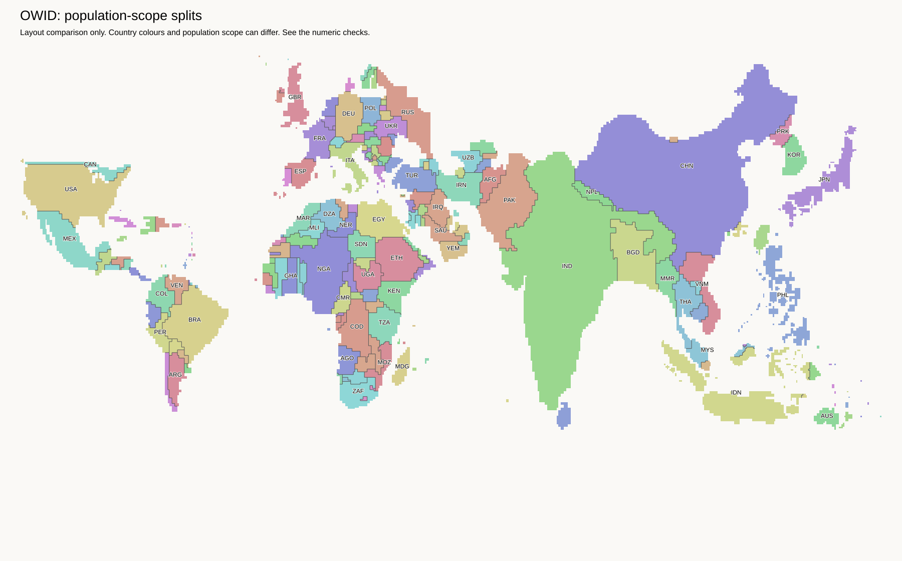

Research trial. The default map and H3-MON exports are unchanged. These display scopes do not assert sovereignty.
The same 54,967 land cells are retained. All sea and lake positions are unchanged. Existing combined budgets are divided, not increased. Neighbouring countries keep their tile counts; some internal borders move.
The source assignment now includes 6,373,293 previously unassigned people from the existing source data. This is not an increase in the source population or world tile budget.
The Cyprus residual group includes CYP, CNM, ESB, and WSB source scopes. This is an explicit statistical bucket for the remaining six tiles, not a sovereignty assignment. Northern Cyprus receives two tiles. Buffer and base areas do not get separate visible tiles in this trial.
KOS, SOL, and CYN are source-scope IDs, not ISO numeric country codes. The downloadable cells use these IDs. No misleading numeric OWID-format export is provided.
Scope policy · Budgets, border edits, and checks · Every source assignment · Remaining unrepresented scopes · Land tiles

Added contacts: ALB:T1 / KOS:T1, HRV:T1 / MNE:T1, KOS:T1 / MKD:T1, KOS:T1 / MNE:T1, KOS:T1 / SRB:T1, MKD:T1 / SRB:T1, MNE:T1 / SRB:T1.
Removed contacts: ALB:T1 / BIH:T1, ALB:T1 / SRB:T1.

Added contacts: DJI:T1 / SOL:T1, ETH:T1 / SOL:T1, SOL:T1 / SOM:T1.
Removed contacts: DJI:T1 / SOM:T1.

Added contacts: CYN:T1 / CYP:T1.
Removed contacts: none.
